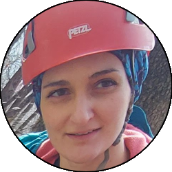
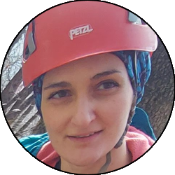
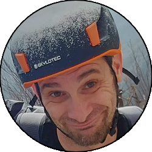
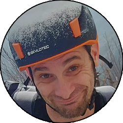

Relazione
| Data Uscita | 02-06-2023, Venerdì | Area | Tre Signori |
|---|---|---|---|
| Luogo di Partenza | Piazza Carrobbio - Introbio (LC) | Quota |
600m la partenza 850m l'ingresso della forra (parte bassa) |
| Dislivello | 250m | Tempi | 03:30 ore (02:30 ore la forra) |
| Esposizione | Sud, Ovest | Difficoltà Tecnica | V3A4 |
| Vie di Fuga | No | Bacino Pluviale, Prese d'Acqua o Condotte | 8,5km², presa d'acqua alla partenza della parte alta |
| Partecipanti |
 Henry,
 Lucrezia, Henry,
 Lucrezia,
 Marta, Marta,
 Mayday, Mayday,
 Oracolo,
Roberto,
Stefano,
Stefano R,
Szilvia,
 Walterino, Oracolo,
Roberto,
Stefano,
Stefano R,
Szilvia,
 Walterino,
 Walterone Walterone
|
||
(clicca sull'immagine per scarica la traccia GPS)
Accesso
Da Lecco salire in Valsassina, superare Balisio e scendere fino alla chiusa, superata la quale prendere a destra per Introbio. Prima di entrare nelle strette strade del paese, parcheggiare presso la caserma dei carabinieri sulla destra.
Avvicinamento
L'avvicinamento in passato si poteva anche effettuare tramite navetta, ma visto che recentemente la strada di Biandino è stata nuovamente chiusa completamente al traffico e onde evitare inutili multe, visto che comunque non ci vuole molto a piedi così abbiam fatto e così spiego nella relazione. Dal parcheggio tornare sulla strada principale, superare il ponte (si può guardare la portata) e prendere subito a destra, salendo per le strade del paese. A una cappelletta prendere a destra, ignorare una deviazione a destra (uscita della forra) e prenderne una seconda, cartelli che indicano il rifugio Buzzoni. Seguire la mulattiera, a tratti ripida, che presso un altro bivio (tenere la destra, cartelli) diventa sentiero, e sale faticosamente sul versante idrografico destro della forra. Salendo si arriva fino a un punto dove si incrocia la strada agro-silvo-pastorale, e pochi metri dopo un sentiero si stacca sulla destra, che si segue in lieve discesa fino a un ponticello, dove attacca la parte bassa del torrente.
Discesa
La prima parte della forra consiste in una serie di passaggini in libera, calate e tuffetti, alcuni anche belli, mai da altezze esagerate.
Nella parte centrale il torrente si inforra un po' di più, e dopo uno dei tuffi più belli (calata tutta sulla sinistra) si trova la teleferica fissa, una zona con tronchi e strettoie, e qualche passaggio con diverse attrezzature fisse: catene, corde fisse e qualche piolo che permettono di velocizzare la discesa.
L'ultima parte ha un passaggio in libera da effettuare su terreno asciutto tutto sulla destra (consigliabile sedersi). Superato quello si passa da un'altra serie di pozze, che porta all'ultimo passaggio saliente: una "scala" d'acqua molto bella dove si scende per corda fissa (consumatissima) e poi si cammina in questa strettoia tra la spinta del fiume, fino a uscire su terreno più facile. L'ultima parte è piatta e abbastanza lunga, e c'è anche una recente frana a metà che ha disastrato un po' tutto (attenzione!). Su questa parte piatta si supera una piccola panca sulla destra, fino ad arrivare eventualmente a un invaso artificiale dove sulla destra c'è un ponticello cementato dove la forra finisce.
Ritorno
Seguire il sentiero cementato verso destra senza difficoltà, che diventa sentiero. Passare accanto a un paio di edifici e reimmettersi nelle vie del paese percorse all'andata. Scendere fino alla strada principale e girare a sinistra per tornare al parcheggio.